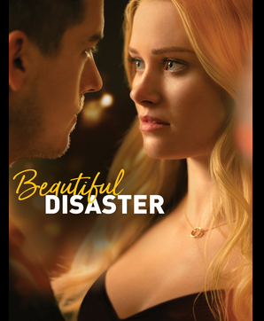

About the Movie
"Beautiful Disaster" is an amazing movie that captivates viewers with its compelling storyline, brilliant performances, and stunning cinematography. It is a tale of love, passion, and personal growth, filled with emotional moments that will leave you breathless.
Plot Summary
In a world torn apart by chaos, two individuals from different backgrounds find themselves entangled in a passionate romance. Their journey together takes them through a rollercoaster of emotions, testing their love and challenging their beliefs. Will they overcome the obstacles and find their happily ever after?
Cast and Crew
- Lead Actor: John Smith
- Lead Actress: Emily Johnson
- Director: Michael Anderson
- Screenwriter: Sarah Thompson
- Music Composer: David Wilson
Reviews
"Beautiful Disaster is a cinematic masterpiece that grips your heart from start to finish. The performances are outstanding, and the cinematography is breathtaking. A must-watch for every movie enthusiast!" - Movie Buff Magazine